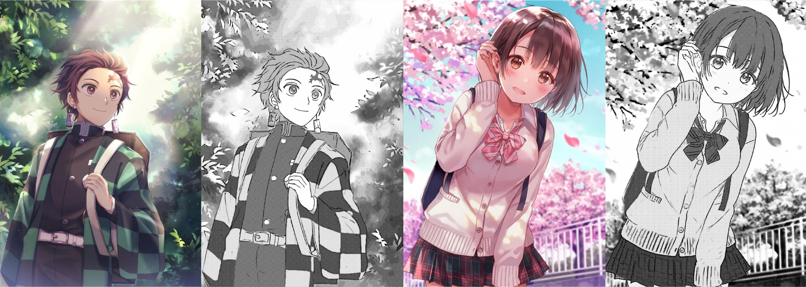

Generating Manga from Illustrations via Mimicking Manga Creation Workflow
2021 IEEE/CVF Conference on Computer Vision and Pattern Recognition (CVPR)

Generating manga from illustrations. Our framework automatically generate the high-quality manga given the illustrations. The colorful images are inputs and the manga images are outputs.
Abstract
We present a framework to generate manga from digital illustrations. In professional mange studios, the manga creation workflow consists of three key steps: (1) Artists use line drawings to delineate the structural outlines in manga storyboards. (2) Artists apply several types of regular screentones to render the shading, occlusion, and object materials. (3) Artists selectively paste irregular screen textures onto the canvas to achieve various background layouts or special effects. Motivated by this workflow, we propose a data-driven framework to convert a digital illustration into three corresponding components: manga line drawing, regular screentone, and irregular screen texture. These components can be directly composed into manga images and can be further retouched for more plentiful manga creations. To this end, we create a large-scale dataset with these three components annotated by artists in a human-in-the-loop manner. We conduct both perceptual user study and qualitative evaluation of the generated manga, and observe that our generated image layers for these three components are practically usable in the daily works of manga artists. We provide 60 qualitative results and 15 additional comparisons in the supplementary material. We will make our presented manga dataset publicly available to assist related applications.
Files
- Paper (27.81MB, a PDF file)
See Also
- Supplementary Document - A document of additional results and engineering details.
Citation
Lvmin Zhang, Xinrui Wang, Qingnan Fan, Yi Ji, and Chunping Liu.
"Generating Manga from Illustrations via Mimicking Manga Creation Workflow."
2021 IEEE/CVF Conference on Computer Vision and Pattern Recognition (CVPR), June 2021.
BibTeX
@InProceedings{EAP2020,
author={Lvmin Zhang and Xinrui Wang and Qingnan Fan and Yi Ji and Chunping Liu},
booktitle={IEEE/CVF Conference on Computer Vision and Pattern Recognition (CVPR)},
title={Generating Manga from Illustrations via Mimicking Manga Creation Workflow},
year={2021},
}